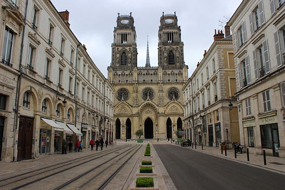

Kattints a képekre,hogy megtudd a lakosság számát az adott városban.
Kattints a város nevére,hogy a további tudnivalókat meglásd.
Párizs
Párizs Franciaország fővárosa. Az ország északi részén, a Szajna folyó partján terül el, az Île-de-France régió szívében. Párizs Európa egyik legnépesebb városa.
Strasbourg
Strasbourg város Franciaország keleti határán, ahol az Ill folyó a Rajnába torkollik. Grand Est régió és Bas-Rhin megye székhelye. Itt található az Európai Parlament, az Európa Tanács és az Emberi Jogok Európai Bírósága. Franciaország kulturális és történelmi városa címet viseli.
Orléans
Orléans nagyváros Franciaország középső részén, a Loire folyó völgyében. Centre-Val de Loire régió és Loiret megye székhelye. Franciaország kulturális és történelmi városa címet viseli. Az Amerikai Egyesült Államokban található New Orleans erről a városról kapta a nevét.

Bordeaux
Bordeaux délnyugat-franciaországi város. Franciaország kulturális és történelmi városa címet viseli. Fontos egyetemi város, négy egyeteme és egyéb közép-, illetve felsőoktatási intézménye van.